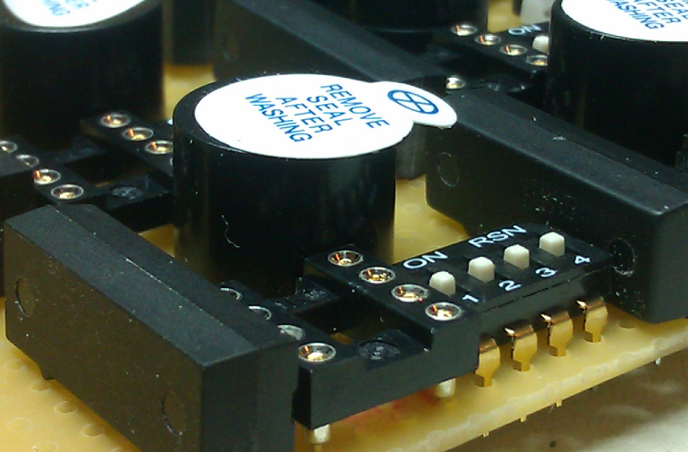

Predefinisana lozinka.
Volite jednostavnost? Izaberite model gde ne postoji uputstvo za promenu tajne lozinke jer je sve intuitivno. Dip prekidač predstavlja vašu tajnu lozinku.
Glasovni odgovor.
Unapredite vaš imidž. Kada vašim korisnicima neko poželi dobrodošlicu lepim glasom onda je to već korak ispred konkurencije.

Bezbednost na prvom mestu.
Uređaji koji vam mogu ponuditi sličnu funkcionalnost kao što su: RFID čitač i brojevna tastatura, imaju dobro poznate nedostatke.